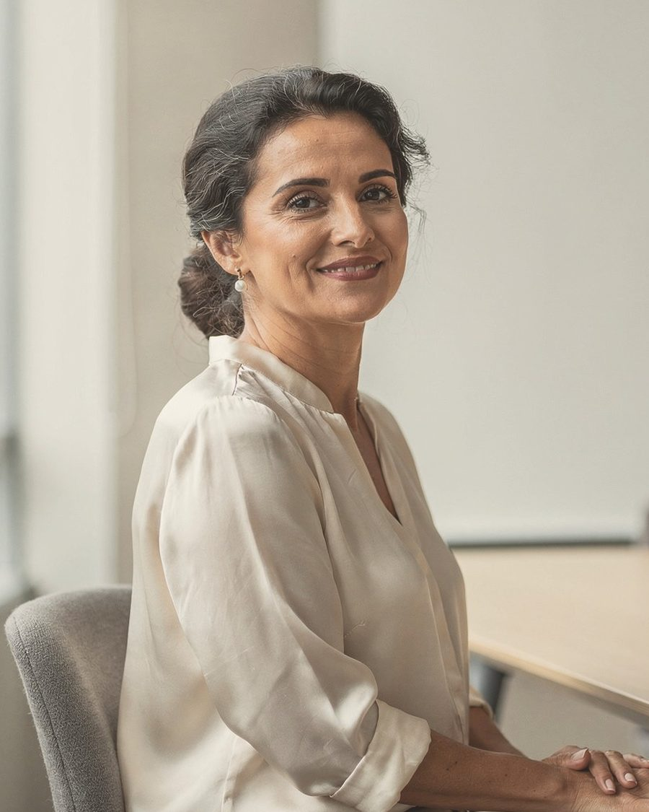

Governança corporativa
Estrutura decisória
Quem decide o quê, quando e com base em quê.
Uma estrutura de governança do tamanho da sua empresa, para que as decisões deixem de depender de uma pessoa só e os sócios falem a mesma língua.

Consultoria de estratégia e gestão
A Prosperista é a copiloto de quem comanda a empresa: traz clareza sobre onde ela está e mostra a direção para crescer com controle. O comando continua com você.

Duas metades,
uma direção.
Para quem é
Se a resposta for sim, a Prosperista pode ajudar.
Vamos conversarSe a resposta for sim, a Prosperista pode ajudar. Vamos conversar
Como podemos ajudar
Governança corporativa
Quem decide o quê, quando e com base em quê.
Uma estrutura de governança do tamanho da sua empresa, para que as decisões deixem de depender de uma pessoa só e os sócios falem a mesma língua.
Diagnóstico
Antes de decidir para onde ir, saber onde a empresa está.
Um diagnóstico objetivo de finanças, operação, pessoas e mercado, que mostra o que funciona, o que trava e o que fazer primeiro.

Modelo de negócio e implementação
O que trouxe a empresa até aqui nem sempre leva ao próximo nível.
Revisão do modelo de negócio e um plano de implementação que cabe na rotina: metas, responsáveis e prazos, com acompanhamento nos primeiros ciclos.

EVENTOS CORPORATIVOS
Conteúdo prático para quem lidera e decide.
Palestras sobre gestão, governança e crescimento para convenções, encontros de liderança, associações e programas de aceleração.
Palestra, painel ou workshop, presencial ou online, adaptados ao público e ao tempo do evento.
Como trabalhamos
01 · Conversa inicial
Uma conversa sem compromisso para conhecer a empresa e o que você quer resolver.
02 · Diagnóstico
Um retrato claro da situação atual e das prioridades reais.
03 · Plano
Metas, responsáveis e prazos, construídos junto com você.
04 · Acompanhamento
Presença na execução, ajustando a rota quando for preciso.

Quem conduz
Fundadora da Prosperista
Agendar conversa
Uma conversa inicial, online e sem compromisso, para entender o momento da sua empresa.
Prefere escrever? {{EMAIL}}